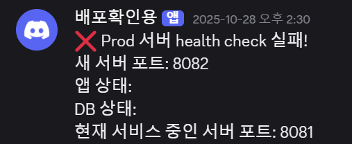
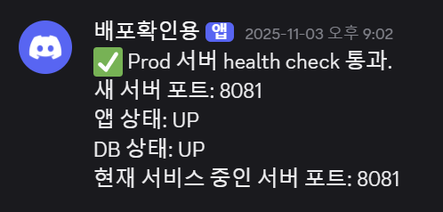

배포 시 서비스 재시작이 필요한 문제와 배포 실패 시 롤백 부담 문제를 해결하기 위해 Blue/Green 무중단 배포를 도입한 사례입니다.
여러개의 프로세스로 서버를 운영하여 다운타임을 줄이고, 배포 실패 시 자동 롤백 처리가 되어야 합니다.
또한, 롤백이 된 경우 개발자가 인지할 수 있는 구조를 만들어야 합니다.
서버 재시작으로 인한 다운타임을 줄이기 위해 무중단 배포 전략을 고민하게 되었습니다.
대표적으로 사용되는 Rolling, Blue/Green, Canary 배포 전략을 비교하며 현재 서비스 환경에 적합한 방식을 검토했습니다.
저는 Blue/Green 방식을 선택하였습니다.
Blue/Green 배포는 새로운 애플리케이션 인스턴스를 실행한 뒤 트래픽을 전환하고 기존 서버를 종료하는 방식입니다.
단순히 애플리케이션을 두 개 실행하는 것만으로 끝나는 것이 아니라 서버 전환 과정에서 발생할 수 있는 운영 이슈를 함께 검토할 필요가 있다고 생각했습니다.
무중단 배포 환경에서는 트래픽 전환 과정에서 사용자의 로그인 상태가 유지되는지가 중요한 요소입니다. 예를 들어 세션 기반 인증을 사용하게 되면 Blue 서버에서 로그인 한 사용자가
Green 서버로 트래픽이 전환되는 경우 세션 정보가 공유되지 않아 로그인이 풀리는 문제가 발생할 수 있습니다.
현재 서비스는 JWT 기반의 Stateless 인증 방식을 사용하고 있기 때문에 서버에 세션을 저장하지 않습니다. 따라서 트래픽이 다른 인스턴스로 전환되더라도 인증 정보는 토큰을 기반으로
검증되기 때문에 로그인에 문제가 발생하지 않는 구조입니다.
이러한 이유로 현재 인증 구조가 Blue/Green 배포 전략과 잘 맞는 구조라고 판단했습니다.
서비스에는 일정 주기로 실행되는 배치 스케줄러 작업이 존재합니다.
단일 서버 환경에서는 스케줄러가 수행해야 할 작업이 애플리케이션 메모리에 존재하는 상태에서 서버가 종료될 경우 작업이 실행되지 못하고 유실될 가능성이 있습니다.
Blue/Green 배포에서는 기존 서버를 종료하는 과정이 존재하기 때문에, 만약 기존 서버에서 실행 대기 중이거나 진행 중이던 작업이 있다면 작업이 중단될 수 있는 가능성이
존재합니다.
현재 프로젝트에서는 해당 문제를 완전히 해결하지는 못했지만, 다음과 같은 개선 방향을 고려했습니다.
2개의 프로세스를 사용하는 것으로, 서버 재시작 시 다운타임이 발생하는 문제는 해결되었습니다. 하지만 빌드 파일에 문제가 있어 배포가 되지 않은 경우, 수동으로 이전 빌드 파일로 롤백이 필요했습니다.
헬스 체크를 통해 서버가 올바르게 배포가 되었는지 확인할 수 있으므로, 헬스 체크에 실패할 경우에 올바르게 배포가 되지 않았음을 의미합니다. 이때, 이전 버전의 프로세스를 종료하는 것이 아닌, 그대로 유지해주는 것으로 자동 롤백 처리를 하였습니다.
Blue-Green 배포를 통해 무중단 배포를 구현했지만 배포가 정상적으로 이루어졌는지 눈으로 확인할 수 없는 구조였습니다. 이 배포 상태도 팀원들과 함께 확인할 수 있는 구조가 필요하다고 생각했습니다.
Discord Webhook 기능을 활용하여 health check에 통과하였는지 여부와 현재 서비스 중인 서버 포트의 정보를 알림 보내는 것으로 가시성을 확보하였습니다.


다운타임을 최소로하여 중단 없이 서비스를 이용할 수 있게 되었습니다.
배포 중 문제가 발생하더라도 자동으로 롤백되어 안정적인 서비스를 운영할 수 있고, 배포 실패 문제를 개발자가 인지할 수 있는 구조로 개선되어 문제를 빠르게 대처할 수 있게 되었습니다.
Blue/Green 배포를 적용하면서 배포 전략이 서비스와 적합한지 꼼꼼하게 검토해야 한다는 것을 알게 되었습니다.
서버 인스턴스는 배포, 스케일링, 장애 등으로 언제든 종료될 수 있기 때문입니다.
포인트는 "서버가 상태를 유지하는 것"이라고 생각합니다.
첫 번째, 로그인 방식입니다.
Stateless 방식의 JWT를 사용하고 있었기 때문에 사용자 정보를 서버에서 관리하지 않습니다.
서버 인스턴스가 변경되더라도 재로그인해야 하는 문제 없이 서비스를 이용할 수 있습니다.
두 번째, 배치 스케줄러 유실 문제입니다.
처리 해야하는 데이터를 서버 인스턴스의 메모리에 올려놓고 작업하는 방식은 데이터 유실 가능성이 있습니다.
중요한 처리를 별도의 인프라로 처리하는 방법에 대해서 생각해볼 수 있는 계기가 되었습니다.
이번 경험을 통해 무중단 배포는 단순히 배포 전략을 적용하는 문제를 넘어, 인증 방식과 작업 처리 구조 등 서비스 전체 구조와 함께 고려해야 하는 운영 문제라는 것을 배우게 되었습니다.